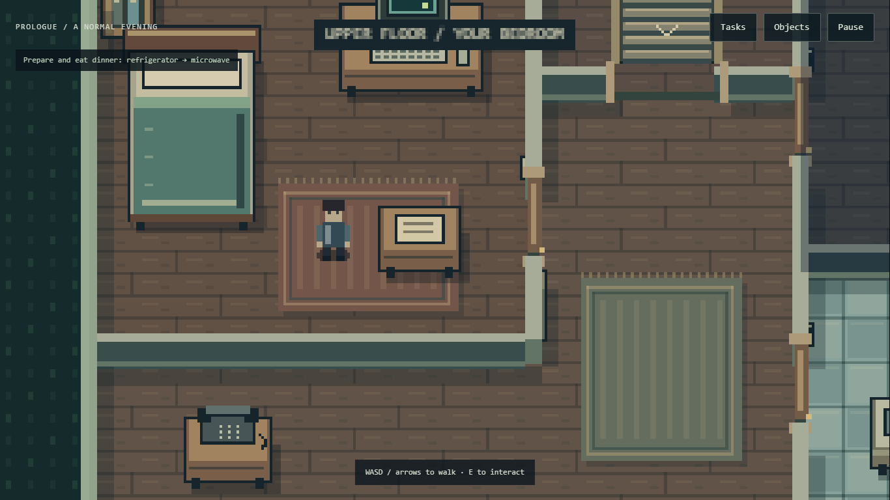
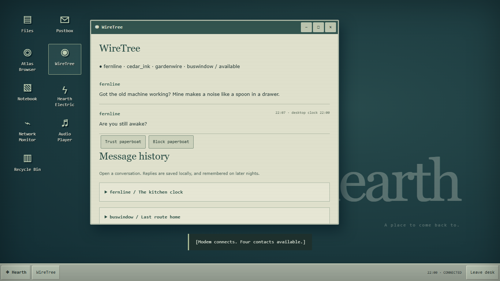

A house to inhabit
Three connected floors, original pixel art, household chores, working lights and appliances, and a power bill that reacts to your choices.
An original browser game / Thomas Argo
Finish your chores. Check your messages. Remember who is still here.
Walk through a quiet house and a familiar desktop as ordinary evenings become harder to explain. The bills keep rising. Your contacts keep replying. Something is using the house to keep the conversation alive.
Three connected floors, original pixel art, household chores, working lights and appliances, and a power bill that reacts to your choices.
Nine desktop applications, five fictional websites, remembered conversations, local files, and evidence you can collect in a notebook.
A prologue and four nights lead to four endings: Disconnect, Upload, Loop, and Last Connection. Your decisions and discoveries persist.


Play directly in a modern browser with JavaScript and WebGL enabled. Desktop gives the computer windows more room; phones have touch controls and a responsive interface.
The game includes fullscreen, keyboard menus, captions, reduced motion and flicker, high-contrast prompts, text scaling, audio controls, and optional fatigue pressure.
Psychological horror, isolation, unsettling imagery, simulated surveillance, and flickering lights. Reduced-motion and flicker settings are available before starting.
Headphones are optional. Sound captions let you follow important audio cues without listening.
Your invented handle, notes, choices, settings, and progress are saved in this browser. There are no accounts, analytics, ads, or uploads of game data. All in-game websites and conversations are fictional and bundled with the game.
Use Settings to delete saved data. Clearing browser storage also removes progress; saves do not sync between devices.